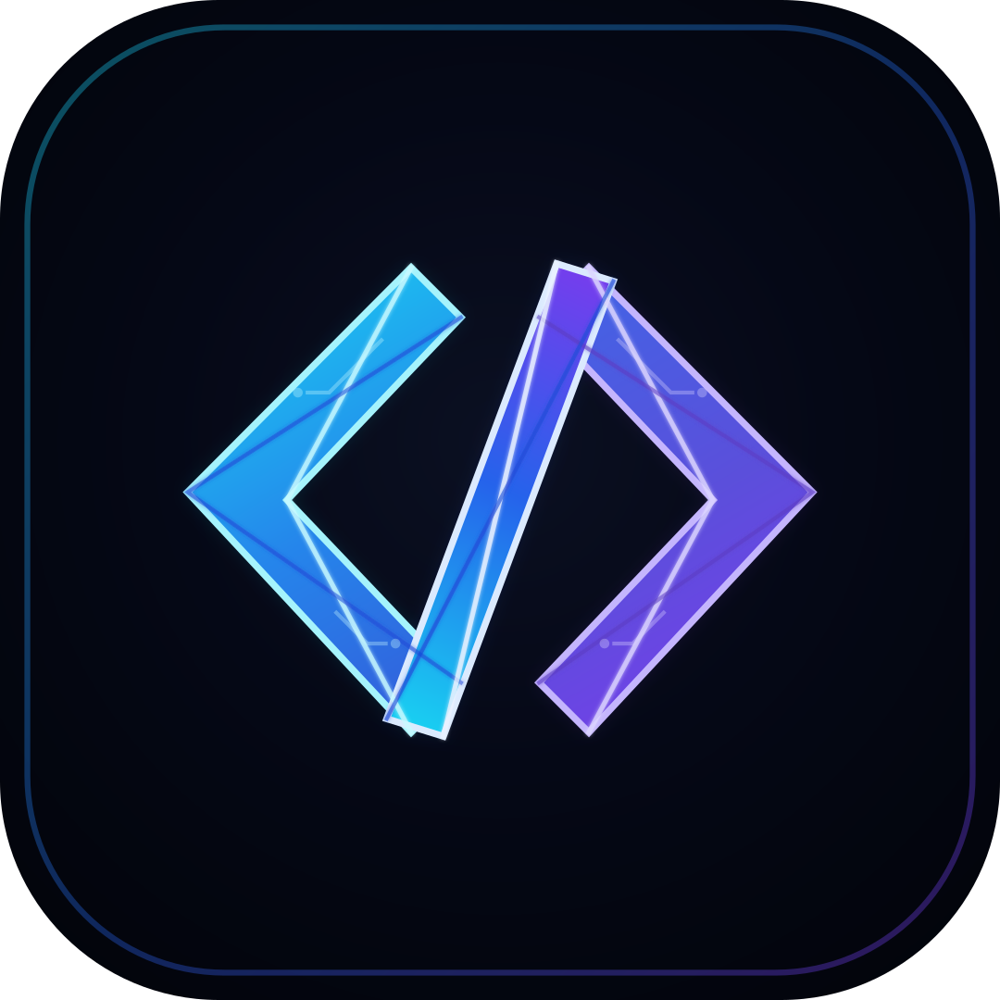

01
Desenvolvimento de sistemas
Soluções personalizadas, escaláveis e eficientes para desafios reais do seu negócio.
Sistemas sob medida, automação de processos e plataformas digitais construídas com clareza, precisão e foco no que realmente gera resultado.

Do planejamento à entrega, cada projeto parte de um problema real e evolui para uma solução clara, funcional e preparada para crescer.
Soluções personalizadas, escaláveis e eficientes para desafios reais do seu negócio.
Experiências intuitivas e consistentes para dispositivos móveis.
Interfaces modernas, responsivas e acessíveis, do institucional ao sistema completo.
Estruturas seguras, flexíveis e preparadas para acompanhar sua operação.
Processos conectados para reduzir tarefas repetitivas e aumentar a eficiência.
O código não está dentro do prisma. O código constrói o prisma.
A Prism Code transforma ideias em soluções digitais eficientes. Cada decisão — da arquitetura à experiência — é tomada para simplificar processos, conectar pessoas e construir resultados reais.
A solução nasce do problema e é sustentada por engenharia.
Decisões, prioridades e entregas acompanhadas com transparência.
Tecnologia pensada para a necessidade real de cada projeto.
Um fluxo direto para reduzir incertezas, manter a qualidade e transformar cada etapa em avanço visível.
Entendemos o problema, o contexto e os objetivos.
Definimos escopo, prioridades e o melhor caminho.
Criamos interfaces intuitivas, claras e consistentes.
Transformamos decisões em código eficiente.
Validamos qualidade, segurança e funcionamento.
Publicamos a solução e acompanhamos o resultado.
Ferramentas são meios, não o objetivo. Selecionamos a tecnologia adequada para construir soluções eficientes, seguras e sustentáveis.
Conte o que você precisa construir, automatizar ou melhorar. O primeiro passo começa com uma conversa.